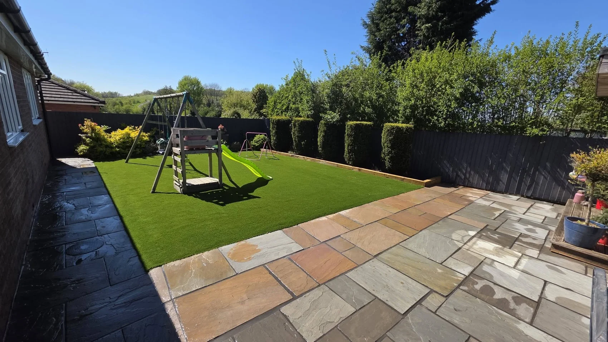

TRU-PRO · STOKE-ON-TRENT
See the details.
Find your inspiration.
Browse completed paving and landscaping projects.
OUR PROJECTS
The Tru-Pro project gallery.
Select any photograph for a larger view.
FREE, NO-OBLIGATION QUOTE
Let’s talk about your outdoor space.
Tell us what you have in mind. This form opens a WhatsApp draft with all your details, ready for you to review, add photos and send.